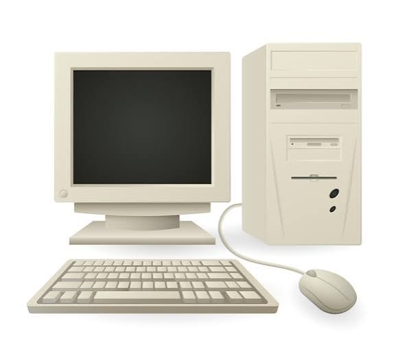

TP N°18: Integrador 2 - Medios Físicos y No Físicos
Docente: Prof. Carrizo Rivera Maritza
Materia: Teleinformática (5° Año - 1° División)
Exposición: Material interactivo para la Feria Institucional
🎯 Objetivo de la página
Este sitio web integra y sintetiza los contenidos trabajados durante el ciclo lectivo sobre la transmisión de datos, clasificando los canales según su soporte físico en medios guiados y medios no guiados, junto con la arquitectura de redes y las infraestructuras submarinas y satelitales como el proyecto nacional ARSAT.

Integración de sistemas de transmisión de datos
📦 Contenido 1: Medios y Redes
- TP 11 y 12 (Medios Guiados): Estructura, funcionamiento y aplicaciones de Par Trenzado, Cable Coaxial y Fibra Óptica.
- TP 16 (Medios No Guiados): Transmisión óptica por Láser (FSO) y espectro de Radiocomunicaciones.
- TP 17 (Redes): Clasificación geográfica y topológica de redes (PAN, LAN, MAN y WAN).
🛰️ Contenido 2: Enlaces Globales
- TP 13 (Submarino): Tendido de Fibra Óptica Submarina y cables intercontinentales que conectan Argentina.
- TP 14 y 15 (Espacial): Enlaces terrestres de Microondas y sistemas de Comunicaciones Satelitales.
- Investigación Nacional: Flota de satélites geoestacionarios argentinos (ARSAT-1, ARSAT-2 y ARSAT-SG1).